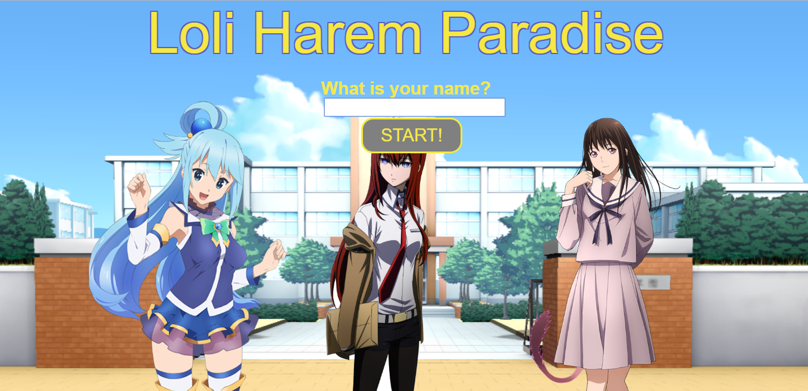
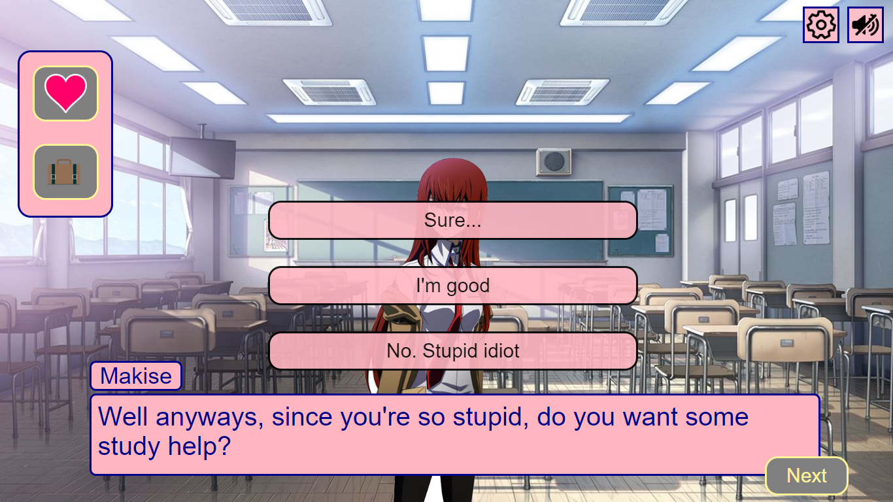
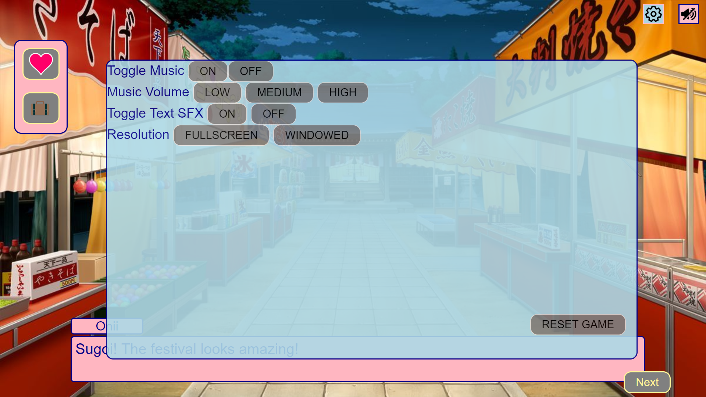
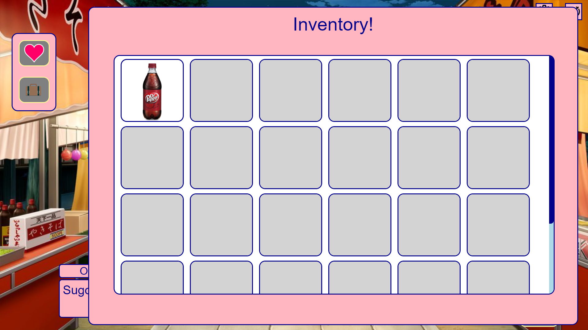
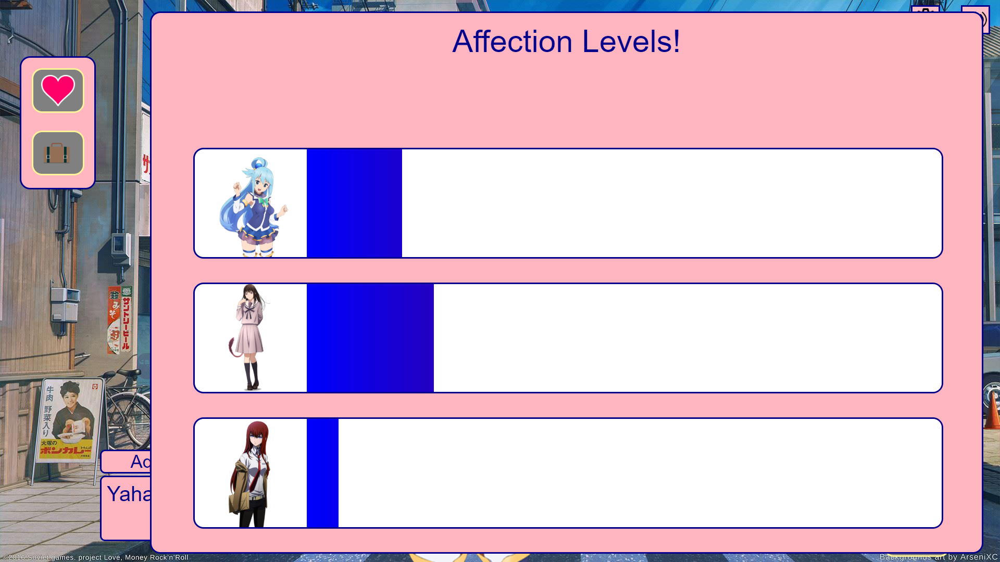
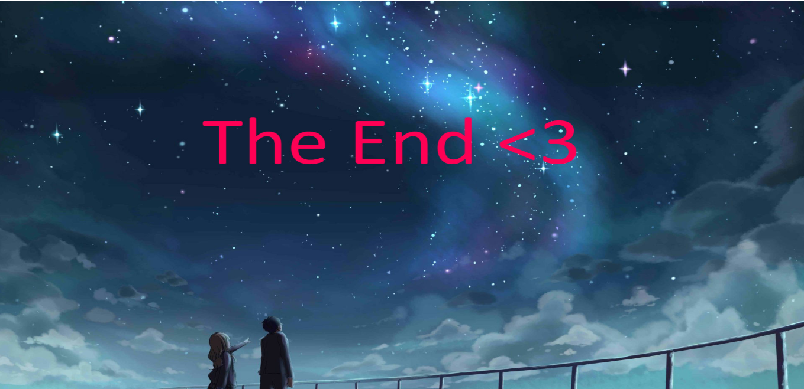
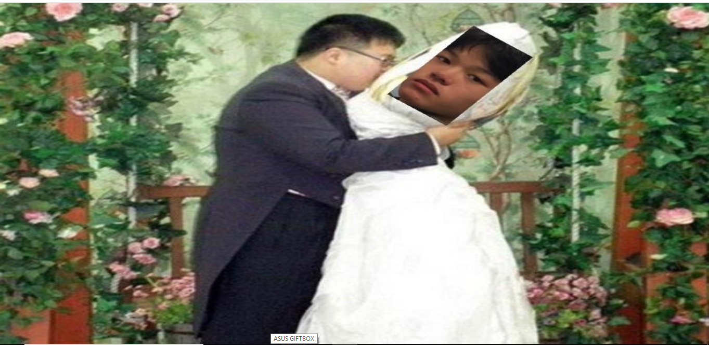

START SCREEN - This is the screen where the player will enter his or her name then click the start button.After clicking start the story will begin.If no name was entered before choosing a gender, the player's name will be preset to "player".

GAME SCREEN - This is the page where the story will progress and character dialogue progresses. The player can choose different dialogue when talking to characters to affect the story and/or progress differently. On this screen, a picture of each character will appear with their textbox underneath. By clicking on the "settings" icon on the top right of the page, the player opens up the settings page. If the player clicks on the "toggle music" icon beside the settings icon, the game music will be muted or unmuted accordingly.

SETTINGS SCREEN - There will be a "settings gear icon" on the top right part of the game page which opens this screen. When this page is opened, the player can toggle with game settings such as the volume of the music and sound effects that play.The "RESET" button at the bottom of the screen is used to restart the game. The settings page can be closed by clicking on the "settings" icon at the top right of any page once again.

INVENTORY SCREEN - This page will display all the items that the player has collected throughtout the story.

AFFECTION SCREEN - This screen can be opened by clicking on the heart icon near the left side of the page. Affection level is the main component of the game that affects the end results of the player. Based on the options the player chooses during dialogue, the affection level of certain characters will go up. The higher your affection level with a girl, the greater the chance you have at becoming couples.

WINNER SCREEN - The winner screen will appear if the player won the girl's heart and was accepted into a relationship with their chosen character. To restart the game, the player can go into the settings page and click the reset button or refresh the page.

LOSER SCREEN - The loser screen will appear if the player didn't win the girl's heart and was rejected instead. To restart the game, the player can go into the settings page and click the reset button or refresh the page.